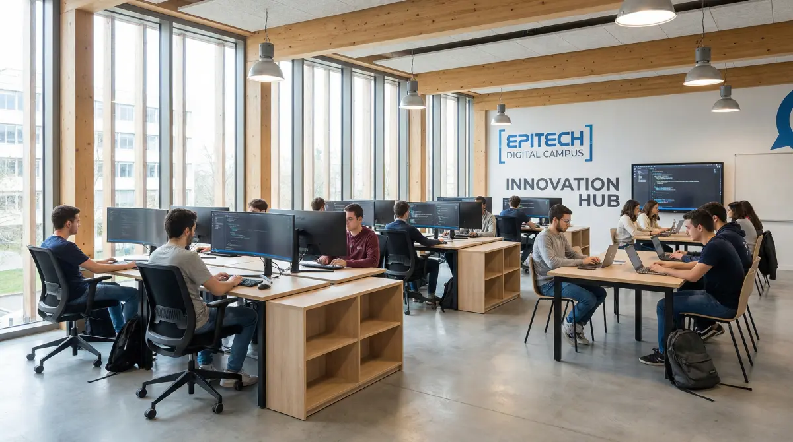

Epitech Rennes — Le lieu
Le campus tech qui accueille les communautés rennaises pour la soirée.
Le campus tech qui accueille les communautés rennaises pour la soirée.

Epitech est une école privée d'informatique présente dans 15 villes en France. Le campus de Rennes accueille régulièrement les meetups des communautés tech locales — RennesJS et d'autres y tiennent leurs événements.
L'école forme des professionnels de l'IT par une pédagogie innovante basée sur les projets.
En centre-ville de Rennes, à proximité immédiate de la Gare et de la Cité Judiciaire.
Facilement accessible en métro, bus ou à pied depuis le centre.
2e étage du bâtiment — suivez les indications le soir de l'événement.